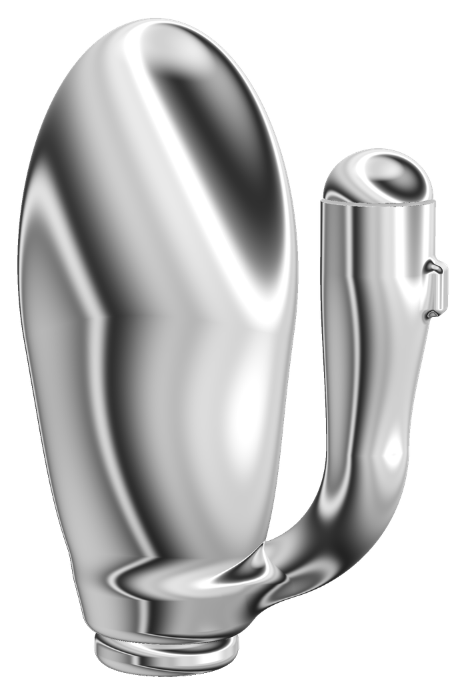

Одно занятие
Разовое посещение2 000 CZK
Чтобы познакомиться с практикой и тренером.
Записаться на одно занятиеФитнес, в котором вместе со всем телом работают интимные мышцы. Для женщин, которые хотят укрепить тазовое дно, лучше чувствовать своё тело и увереннее двигаться — в том числе в близости.
Начните с одного занятия: познакомьтесь с практикой и тренером и поймите, подходит ли вам формат, — без долгих обязательств.
Сначала вы учитесь находить эти мышцы, правильно сокращать и — что не менее важно — расслаблять. Потом включать их в движении, в разных положениях тела, пока это не станет привычкой.

Интимные мышцы нужны нам не лёжа на коврике, а в жизни: когда мы двигаемся, танцуем, любим. Поэтому на EROTRAVERSE они тренируются именно так — в движении и под музыку.
Стоя, на коленях, на боку, в прогибе: в каждом положении интимные мышцы работают по-своему. Мы проходим их все, чтобы мышцы были сильными в любой позе, а не в одной.
Цель — нейронная связь «движение → сокращение». Тело запоминает её как привычку: вы ничего не контролируете, а мышцы сжимаются сами, пока вы виртуозно и пластично двигаетесь в позах Камасутры.
Можно заниматься с тренажёром с обратной связью: его вибрация подсказывает, работают ли мышцы.
Кардио, сила, пластика и растяжка в одной тренировке — работает всё тело, а не одна зона.
Сначала правильное сокращение, потом движение, и только потом скорость. Никто не торопит.
Мышцы становятся крепче и выносливее и лучше поддерживают органы малого таза.
Тренированные мышцы и хорошее кровообращение делают ощущения ярче.
Подготовка к родам и бережное восстановление после них — когда врач разрешил нагрузку.
Работа с собственным весом, кардио и растяжка: спина, живот и ягодицы в тонусе, осанка ровнее.
Учитесь чувствовать напряжение и отпускать зажимы, которые мешают расслабиться.
Движения становятся свободнее и красивее — это чувствуется и в теле, и в близости.
Новое движение будит мозг и эмоции: напряжение уходит, приходят лёгкость и свежие идеи.
Суставы, подвижность таза и спины, лёгкое растягивание — тело разогревается и включается.
Находим интимные мышцы и вспоминаем главное: сокращать мягко внутрь и вверх, не задерживая дыхание и не напрягая живот.
Красивые движения в позах Камасутры, соединённые с сокращением интимных мышц. Мы двигаемся в такт музыке и постепенно переходим с первой скорости на вторую и третью. Цель — чтобы тело запомнило этот навык: двигаться плавно и чувственно, а мышцы сжимались сами, рефлекторно.
Спокойная растяжка без боли и рывков: снимаем напряжение, мягко улучшаем гибкость.
Медленная осознанная практика: чувствуем мышцы и отпускаем напряжение — уходите с лёгкостью в теле.
Имя Фамилия
Тренер · автор методики
Авторская методика с 2011 годаТекст позже: 3–4 коротких абзаца о себе и о методике.
Знакомитесь с практикой и тренером, понимаете, откликается ли вам формат.
Учитесь правильно сокращать и расслаблять мышцы.
Абонемент — 2 занятия в неделю. За месяц тело просыпается: мышцы тазового дна включаются, а ощущения становятся глубже. Тренировки создают особые состояния и новые эмоции.
Занимаемся босиком. Коврики есть в студии.
Я пробовала в простых позах, всё отлично! Муж очень заценил, сказал, что там стало намного уже и мои ощущения тоже совсем другие.
И кстати, муж вчера сделал комплимент, что у меня сейчас форма моей попы ну просто самая лучшая за 23 года, что мы вместе! Очень сексуальная, на ощупь прям чувствуется орех, подтянутая. И в целом всё тело подтянутое! Прям говорит, очень красиво смотреть на меня, это очень возбуждает! Куда лучше — не знает, дальше только жопка бодибилдерши квадратная.
Таких ощущений я не испытывала ни на одной тренировке в моей жизни! Какая это лёгкость! Какая искра в глазах! На следующий день я мужа в прямом смысле слова затрахала — да и он выносливее стал как будто! И это после одной тренировки!!! Что же будет дальше?! Благодарю Бога, что привёл меня сюда. Целюсь на тренерский курс, хочу передавать эту методику всем женщинам! Каждая женщина должна внедрить это в свою жизнь! Это истинная и мощнейшая энергетика женщины.
EROTRAVERSE зашёл в самое сердечко, и я хочу, чтобы эти тренировки остались со мной на всю жизнь, хочу, чтобы у меня все позы получались на макс скорости в течение 2,5 минут! Да будет так!
Благодарю за внимание и чуткость! Я на максимальной энергии! Порхаю весь день! Спорт всегда со мной с рождения, но EROTRAVERSE — это вообще космос какой-то. Я ощущаю такие тонкие и маленькие мышцы, которых ранее не ощущала! Лёгкая приятная боль от нагрузки — восторг! Вопросы решаются сами по себе! День в лёгкости и наслаждении!
Всё просто супер — состояние, настроение. И отражение в зеркале поменялось. Я сегодня другая… Представляете, девочки, поменялось лицо. Удивительно. Я сегодня ещё прекрасней выгляжу)) Ну что за чудо.
Я пробовала дофига разных направлений, танцевальных и не только, но ваша практика — выше всех похвал! Собрано всё воедино, и главное — для кого? Для нас, самых красивых, самых счастливых!
Огромное спасибо вам, что рассказали про тренажёр, он реально помогает, даже при редком использовании, так как из-за работы очень мало времени на занятия. Но он помог справиться с недержанием, это для меня просто какая-то фантастика. Если заниматься каждый день, думаю, будет вообще огонь!!! Спасибо вам огромное, что открываете для женщин другую жизнь!!!
Доброе утро! У меня тут мини-отзыв: напишу здесь, чтобы и поделиться, и зафиксировать изменения. Я продолжаю стараться заниматься ежедневно, конечно, и нашей практикой EROTRAVERSE, и вот что заметила: с каждым разом ощущения в близости с партнёром становятся всё ярче и ярче — и даже в тех позах, в которых раньше чувствительность была очень слабая. Плюс супруг сказал (хотя я даже и не спрашивала, сама в шоке), что есть и визуальные изменения — малые губки раньше раскрывались сильнее, сейчас всё подтянулось.
Нет. Это фитнес: работа с собственным весом, кардио, растяжка и тренировка интимных мышц. В нём есть пластика и красивые движения, но главное — мышцы и то, как они работают. Занимаемся в спортивной одежде, в женской группе.
Нет. Всё осваиваем постепенно: сначала правильное сокращение мышц, потом движение, и только потом скорость. Если что-то пока не получается, делаете в своём темпе.
На первое занятие — нет. Для регулярных тренировок удобно заниматься с вагинальным тренажёром с обратной связью: его вибрация показывает, работают ли мышцы. Расскажем, какой выбрать.
Упражнения Кегеля — хорошее начало, и базовый навык мы тоже отрабатываем. Но в жизни мышцы нужны не лёжа, а в движении. На EROTRAVERSE они учатся включаться в разных положениях тела, пока это не станет привычкой.
Да, когда врач разрешил физическую нагрузку. Начнём бережно — с базового навыка.
Это зависит от регулярности. Короткие домашние упражнения каждый день и две тренировки в неделю — и через несколько недель вы почувствуете разницу. Чтобы навык закрепился, обычно нужно от 1 до 3 месяцев.
Чтобы познакомиться с практикой и тренером.
Записаться на одно занятиеСерия занятий — чтобы результат появился и закрепился.
Купить абонементЗанятия онлайн, если нет возможности прийти в студию.
Запросить онлайнНапишите имя и контакт — мы сами свяжемся с вами и подберём время.